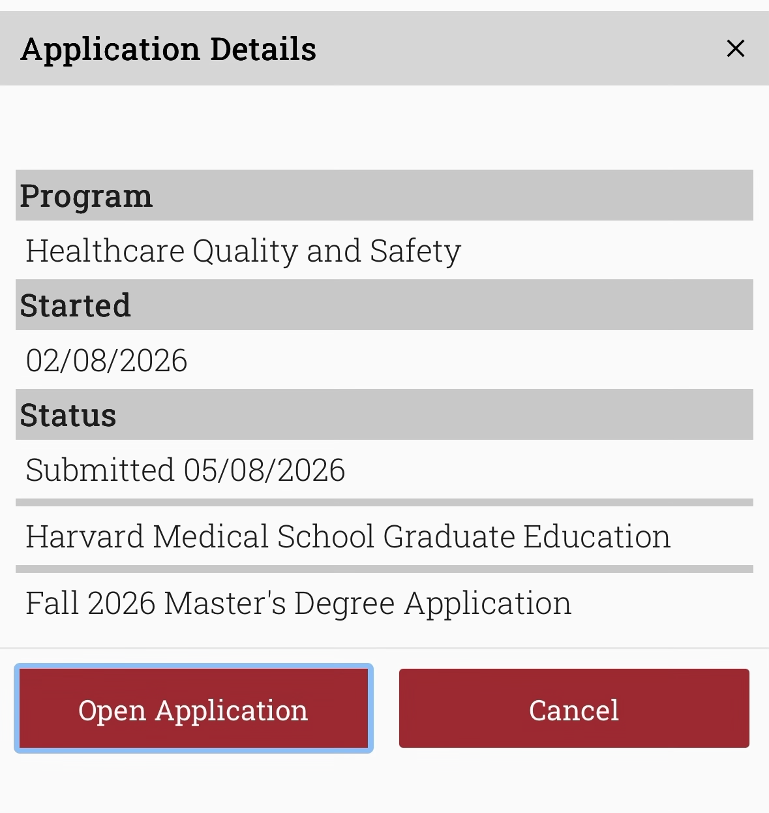

Statement of Need · USA
Documento presente no acervo original desta categoria. Ele é apresentado aqui como registro documental de uma etapa de planejamento e intenção, sem transformar o documento em promessa de resultado.
Abrir documento →Um espaço para registrar ideias, necessidades, objetivos e documentos que expressem a direção que o fundador pretende dar à sua trajetória e ao Instituto.
Documento presente no acervo original desta categoria. Ele é apresentado aqui como registro documental de uma etapa de planejamento e intenção, sem transformar o documento em promessa de resultado.
Abrir documento →